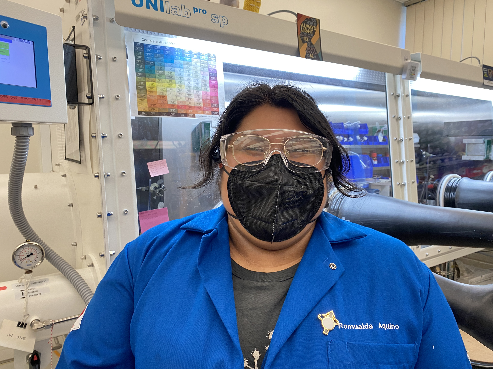
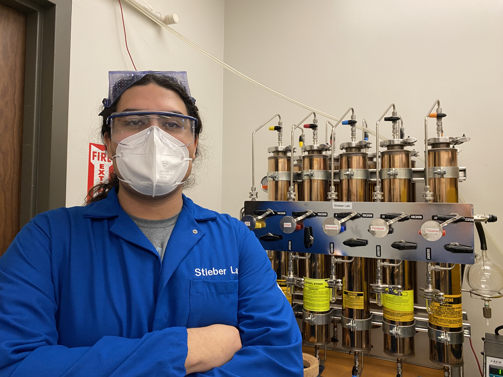
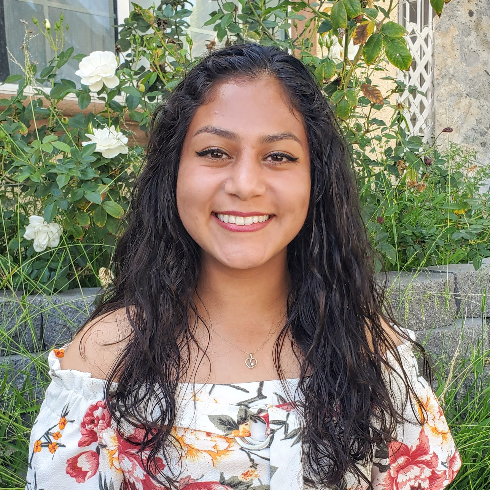
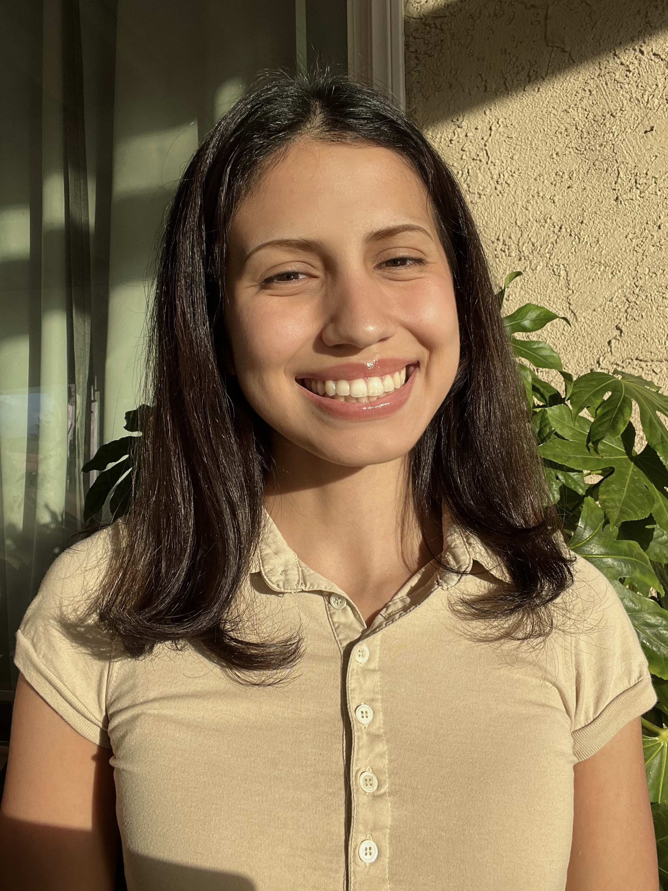
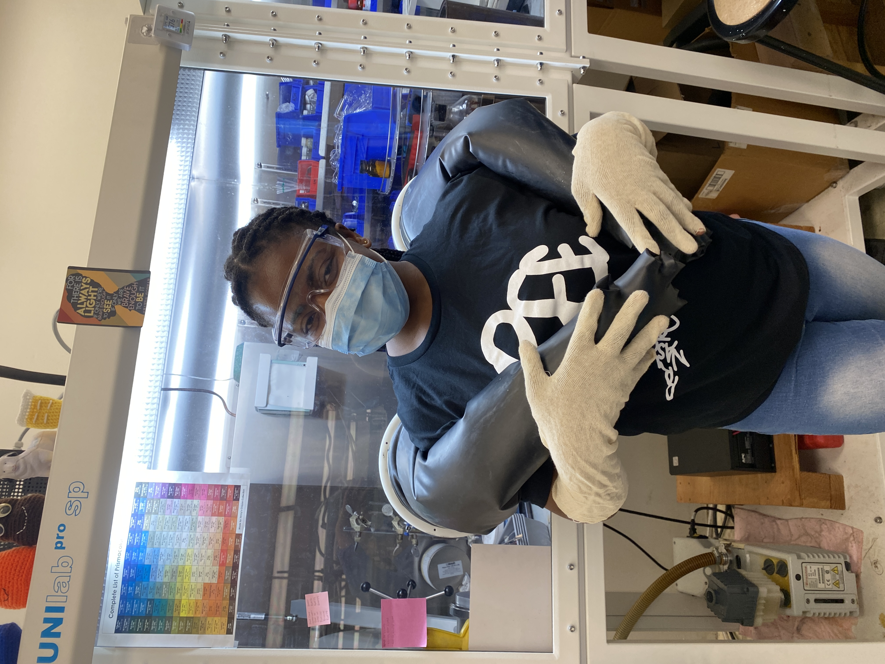

Group Members
Please contact Dr. Stieber by email if you are interested in conducting research in the group.
Group meetings are typically Tuesdays during lunch.
Current Members (click for group pictures)(click for alumni)

Romualda Aquino is a Master's student and joined the group in Oct. 2021. She is making functionalized ligands for Ni complexes.

Zachary Carrillo is Chemistry major and joined the group in July 2023. He is studying electrochemical CO2 reduction.

Ethan Chavarin is Chemistry major, RIO fellow, and joined the group in Sept. 2021. He is studying Ni NHC complexes for C-F activation.

Jessica De la Huerta Joined the group in Oct. 2019. She is studying crystallography and nickel nitrosyls.

Nidia Ibarra joined the group in Sept. 2022 with the STARS program, and does crystallography and materials chemistry.

Gaby Lopez is a Chemistry major and joined in Dec. 2022. She is working on CO2 reduction.

Dr. Zoe Marr Joined the group in Aug. 2023 as a PLUTO postdoctoral fellow in the STARS program. She is studying crystallography and C-F activation.

Duong Nguyen Joined the group in Apr. 2023 as part of the EFRC center. He is working on CO2 reduction.

Nwamaka Ofoegbu Joined the group in Jun. 2023 as part of the STARS program. She is studying CO2 reduction.

Isaac Ramirez is a Chemistry major and joined the group in Sept. 2018. He is making Co nitrosyls.

Alyssa Tran Joined the group in Sept. 2022 and is in the STARS program. She is making bis(imidazolium) salts.

Claudia Wong Joined the group in Jun. 2023 as part of the Mt. SAC NSF program. She is studying CO2 reduction.